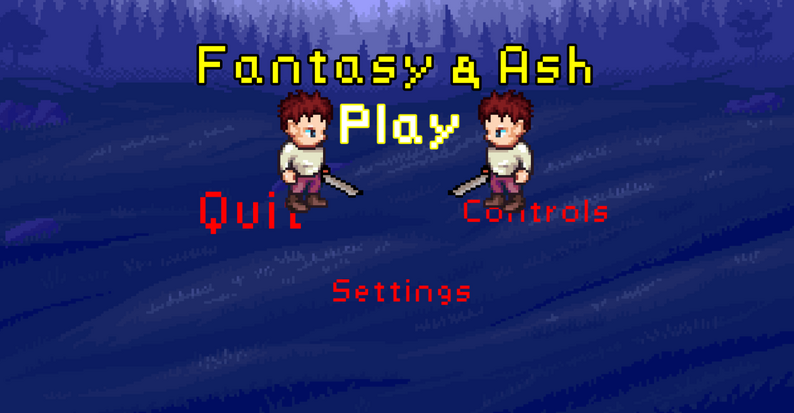
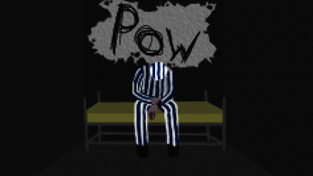

Technical Designer with experience in mission scripting, game systems, and automation testing. A self-motivated and detail-oriented designer with a strong foundation in programming and technical implementation. I've worked across multiple AAA titles in the games industry, bringing missions and systems to life using Unreal Engine and LUA scripting.
About Me
Latest Projects
Mindseye
Mindseye is an episodic action-adventure game blending cinematic storytelling with explosive gameplay, developed using Unreal Engine 5 and Lua at Build A Rocket Boy. As a Technical Designer, I worked across multiple missions from early prototyping through to polish, contributing to gameplay systems, scripting, and level logic. My role focused on bridging design and engineering, ensuring that mission flow, AI behaviours, and in-game events all aligned with the narrative intent and player experience. I collaborated closely with designers, artists, and programmers to implement mission logic, debug scripting issues, and ensure each mission hit our quality bar. Below are some highlights of the missions I contributed to.

One of the final missions in the game and personally my favourite to work on, A Vital Extraction delivers a high-stakes, high-speed chase through a cinematic urban landscape. I was responsible for designing and scripting the entire escape route, orchestrating car and drone pursuers to create a relentless sense of pressure. This mission stands out as one of the most action-packed sequences in the game, blending tight pacing, dynamic threats, and explosive set-pieces to push the player’s driving skills to the limit.
A standout mission in Mindseye, Oh Lily! takes the player through a series of escalating encounters, culminating in the game’s only boss fight. I was responsible for designing and scripting all major gameplay moments—from carefully tuned enemy placements to intense combat sequences. The mission features a dramatic mid-point where the player’s vehicle is destroyed in a scripted event, forcing a change in gameplay style. With support from friendly drones and a cinematic climax, this mission showcases a blend of pacing, spectacle, and technical design that makes it one of the most memorable experiences in the game.
In Seeking Doctor Morrison, the player is on a tense search for a hidden underground silo—but it’s far from a quiet journey. I designed and scripted a dynamic series of drone ambushes that escalate in intensity, creating a constant sense of action while subtly guiding the player toward the objective. The encounter pacing was carefully tuned to keep players engaged and on edge, using enemy positioning and timing to shape both challenge and direction. This mission balances environmental storytelling with tightly controlled combat scenarios, making it a key moment of tension and discovery in the game.

User Interface Project (Advanced Games Engineering)
The purpose of this project was to create and produce a game artefact in which uses advanced games engineering techniques. This artefact can be anything related to games engineering so long as it met a certain criteria of requirements. By the knowledge I have gained throughout my time at university I created an efficient game User Interface in which uses the 3 different aspects within the game User Interface sector, these consist of Meta, Spatial and Diegetic. With also the addition of an A* pathfinder to represnt parts of the spatial UI. The documentation to this project can also be found in the project downloads folder.

Fantasy & Ash (Games Engineering Project)
Fantasy & Ash is a game I developed in my 3rd Year of Univeristy, written in C++ and SFML. Set in the land of Kyntera, Andrel, a high-level member of a local adventurer’s guild is killed on a routine quest under suspicious circumstances. He awakens to find that they have been reborn as a level 1 adventurer, with only a note from the kingdom explaining his situation and a sword. He must work his way back to his previous position by completing quests and hunting monsters, all while trying to uncover what happened. By fighting orc's and skeleton's Andrel and his party will atain experience aswell as gold in order to pay their way back into the kingdom.

Prisoner Of War
Prisoner Of War is a game I developed in late 2018 for my college graded Unit in which i recieved an A for, the game was written in C# and monogame. Set in the thick of world war two, Lieutenant George Andrews has been captured and held prisoner by the Germans, due to high volumes in the prisoner camps the Lieutenant has been sent to the Jewish camps to face the horrors alone. In this top down prison escape, you will be faced with challenges such as sneaking passed guards, picking up letters which in turn give ideas to find tools in order to escape the prison.
Other Projects
Dissertation - Click here to download
The aim of this project was to produce and compare three procedural map generation algorithms for a two-dimensional dungeon roguelike game. In turn, deriving assumptions from these algorithms which in turn can be used to produce detailed comparisons of performance. The outcome was a successful prototype that had three different map generation algorithms consisting of Cellular Automata, Perlin Noise and Delaunay Triangulation with the paper being graded a 2:1.
Github - Click here
At my github all my other project can be seen. Most projects have been completed throughout univeristy and college but some are personal project in which I am still working on.
Itch.io - Click here
My itch.io holds for the most part, my completed games in which more will be produced in the coming months.
Work Experience
Technical Designer - Build a Rocket Boy (December 2022 - Current)
Initially joined as an Associate Technical Designer, promoted to Technical Designer in July 2024.
- Worked on two large-scale projects: Everywhere and Mindseye.
- Developed missions and systems using Unreal Engine and LUA scripting.
- Collaborated with multi-disciplinary teams to enhance gameplay and systems.
Software Tester - The Shopworks (May 2021 - December 2022)
At The Shopworks, I maintained the automation and QA of the applications. Previously I constructed and organised all the automation testing. Covering all aspects of the applications, these automation tests were created using Testim an automation tool that uses test grids and NodeJS to construct different test cases.
Software Engineer Intern - Calnex Solutions (June 2020 - September 2020)
As a Software Engineer Intern at Calnex Solutions I got hands on experience in editing programming code via updating the Delphi IDE within the company. In conjunction with this, I was given practical python scripting experience measuring network performance for a client of Calnex. Furthermore, I provided ABB testing for certain components within the Calnex solutions software. Each task required high levels of team communication within a scrum and cohesion with the scrum manager to ensure that whomever requested the task be done, whether that be a client or Calnex management were more than satisfied with the job done.
Software Engineer Intern - Viavi Solutions (June 2019 - September 2019)
As a Software Engineering Intern at Viavi Solutions, my main task was taking on a project which anonymised and encrypted geo-locational data to ensure the protection of client data and personal information. My other day-to-day requirements consisted of tasks such as: Fixing bugs and writing scripts in C#, Handling highly stressed situations / unexpected errors in an eficient manner, Assisting in the commercialization of service and project management software, Backlog negotiation and project estimations, Coding, testing and fixing programming errors, Communication with clients and representing Viavi in a professional mannerism, Working in conjunction with a core team and a scrum master.